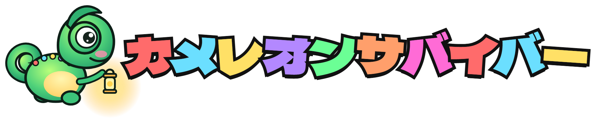
スマホのライトで敵を照らして、
カメレオンと夜の森を生き抜け！
足元のマットを踏んで、カメレオンを動かす
自分のスマホが懐中電灯になる。
森を照らして、敵をやっつける
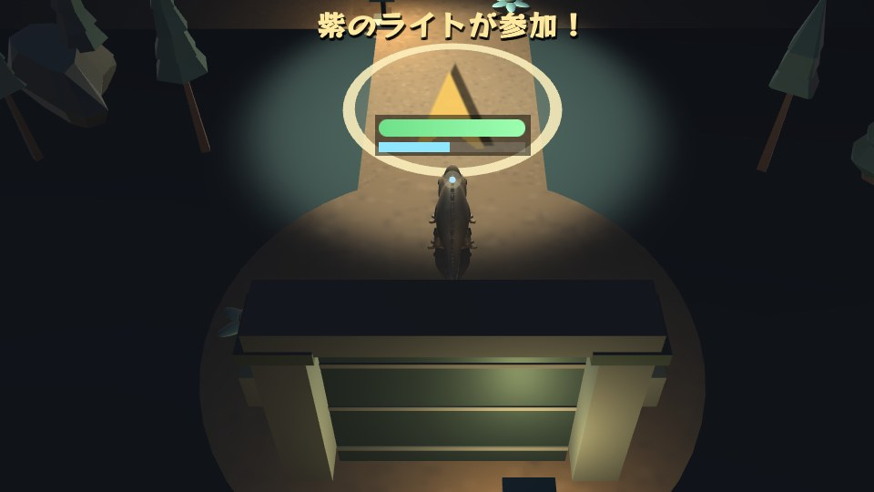
夜の森はまっ暗。照らされた場所しか見えない
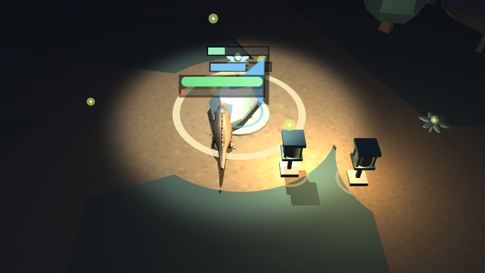
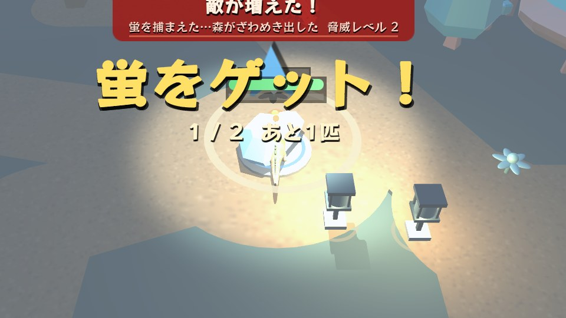
石は2か所。1か所につき蛍1匹。
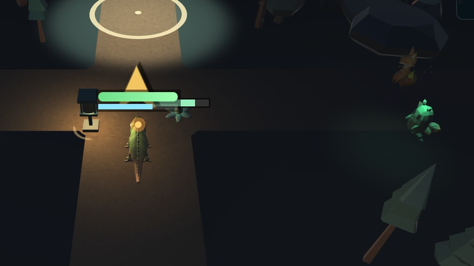
アプリのインストールは不要 ／ iPhone は「許可」を選ぶ
光がずれたら「中心をリセット」
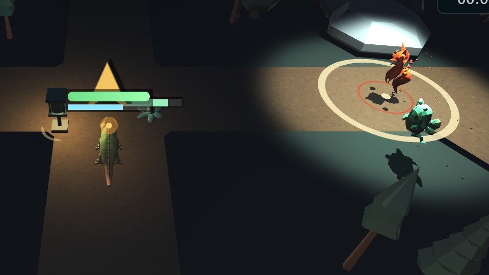
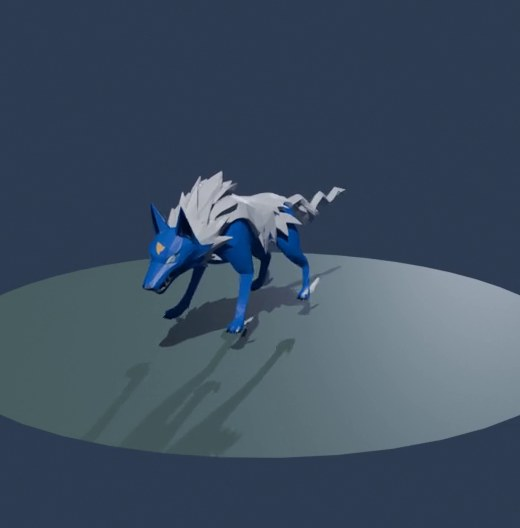
小さくて速い。
3匹で群れて来る
遠くから
火の玉を投げてくる
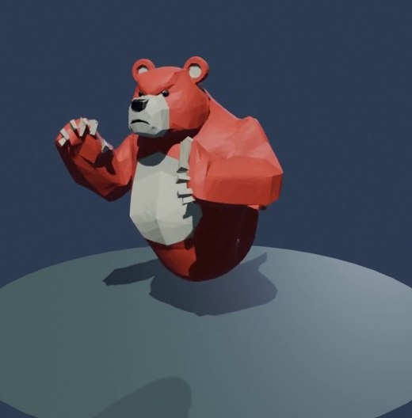
大きくて遅い。
かたくて、パンチが痛い
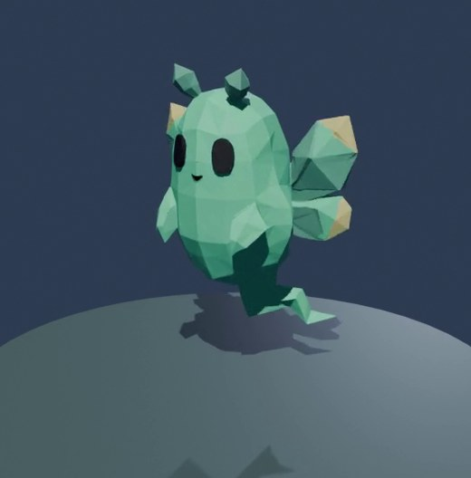
木や崖をすり抜けて
まっすぐ来る。弱い
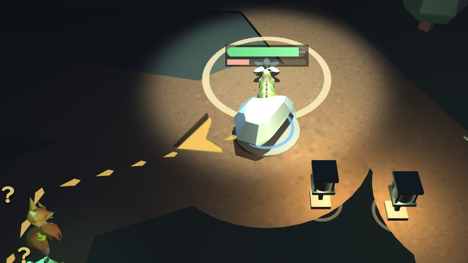
照らすと、蛍のいる石まで光の道が出る。
迷ったら花を探そう
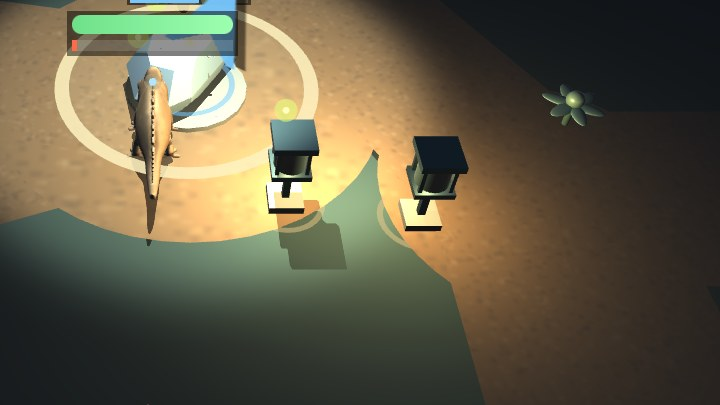
はじめから灯っている。
まわりに来た敵は弱っていく
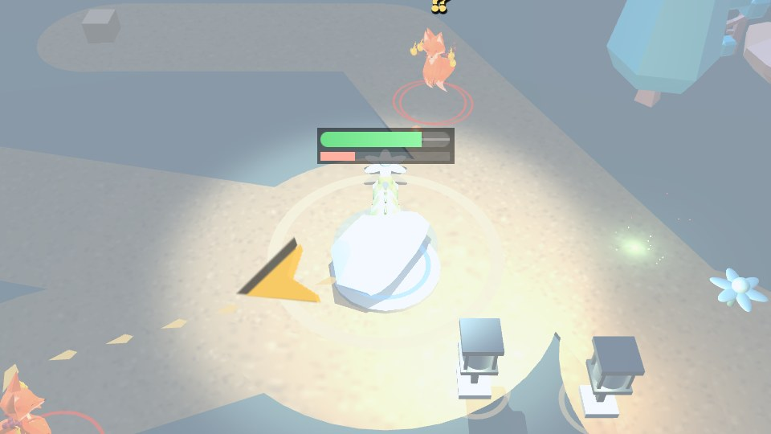
約12秒ごとに「ゴロゴロ」→ 森が光る。
近くの敵にダメージ
カメレオンの体力(緑のバー)が0になると終わり。
敵にさわられたり、火の玉に当たると減る
蛍を捕まえたり、体力を回復したりすると「敵が増えた！」。
敵の数が増えて、出てくるのも早くなる
→ 後半ほど大変。灯り役のチームワークが大事！
★☆☆ やさしい A. 森の迷路
★★☆ ふつう B. 遺跡攻略
★★★ むずかしい C. 中央湖の周回
はじめての人は A がおすすめ
脱出できたら
クリアボーナス 5,000点
＋ 倒した敵 1体 100点
＋ 早く脱出するほどボーナス
途中で力尽きても
倒した敵と、生きのびた時間で点数
マップごとに10位までランキングに載る
みんなで灯せ、夜の森。